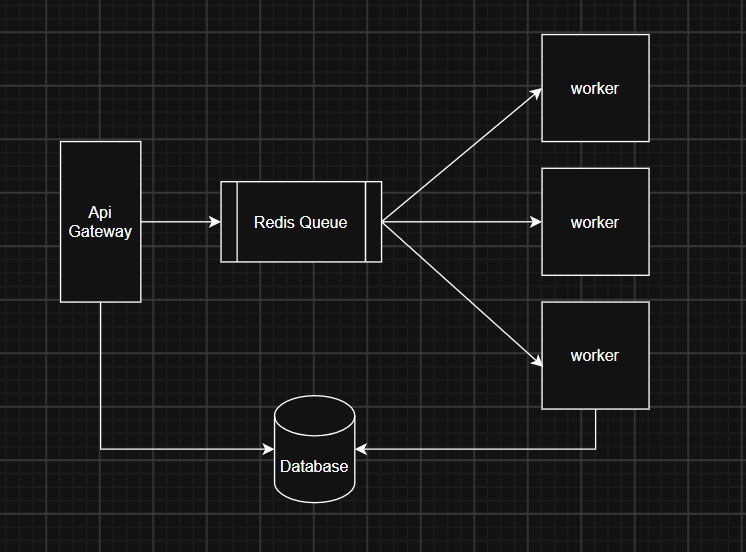

A common pattern I notice everywhere being very new to system-design is queue-worker based architecture. The thing about this design is that it seems overcomplicated for no reason.
When you first encounter production backend architectures, you often ask yourself: "Why add a queue? Why introduce Redis, Kafka, or RabbitMQ between my API Gateway and worker nodes? Why not just keep it simple and forward requests directly?"
For example, here is an architecture pattern that I used in one of my projects:

I always wondered: why not just send the data to a single worker server?
I found out while I was understanding the internal mechanics of a code execution platform (like LeetCode). In such platforms, compiling, sandboxing, and evaluating a user submission can take anywhere from 1 to 3 seconds to execute.
Now think about what happens under realistic traffic: if 10 users click "Submit Code" around the exact same second, relying on a single worker creates an immediate bottleneck. The 10th user would be forced to wait upwards of 20 to 30 seconds simply because previous executions are occupying the CPU synchronously!
So using multiple worker nodes seems the best approach. Now that brings us to the question: why do we need a Queue?
Imagine we store all of the incoming code submitted by users along with its metadata (language, time taken, memory limit, timestamps, etc.). We need to make sure that this entire process is asynchronous and continues running smoothly even during sudden spikes of high traffic.
For that to happen, even if all worker nodes are currently 100% busy running heavy test cases, we need a way to store execution requests somewhere fast—a system that reliably preserves the sequence by which jobs were submitted.
A queue is a fast place to hold jobs until a worker is ready.
Some queue systems keep data purely in memory, some save it to disk, and many modern engines use a combination of both. It is best to think of a queue as a temporary buffer between the part of the system that receives the request and the part that actually does the heavy computational work.
When a user submits code:
- The application saves the submission details as a lightweight job in the queue.
- It immediately returns an HTTP
202 Acceptedresponse with asubmission_idso the user is never kept hanging. - A worker takes a job from the queue when ready, runs it in a containerized sandbox, and writes the output verdict to the database.
- If all workers are currently busy, jobs wait safely in the queue instead of failing or timing out.
The queue helps absorb sudden spikes in requests, and the number of workers can be dynamically autoscaled up when the queue starts getting too long.
Critical edge cases you have to handle in production
While the architectural concept is clean, real-world systems introduce failure modes that must be handled explicitly:
1. Worker Failure & Retries
A worker can crash (OOM killer, segmentation fault from user code, network timeout) midway through running a job. Most queue systems detect the missing heartbeat and retry the job on a different worker.
2. Avoiding Duplicate Results (Idempotency)
Because retries mean the same job could potentially execute more than once, we must design the storage layer carefully so we avoid accidentally saving duplicate execution results or charging users twice.
3. Transparent State Tracking
Since execution happens asynchronously in the background, we need a reliable way to communicate current status to the user's browser:
type JobStatus =
| "WAITING" // Buffered in Redis queue
| "RUNNING" // Picked up by worker pod
| "COMPLETED" // Execution finished, verdict stored in DB
| "FAILED"; // Sandbox crash or timeout errorWhen is this design actually needed?
This architecture introduces real operational overhead (Redis instances to manage, worker pool orchestration, serialization, and monitoring). It is not needed for every project:
If the work is quick (simple DB reads/writes taking < 20ms) and there are not many concurrent users, a monolithic single server is usually more than enough.
A queue-worker setup becomes indispensable when:
- Jobs take a long time to complete (video transcoding, AI inference, code compilation, sending bulk emails).
- Spikes of traffic can arrive at once and would otherwise overwhelm the CPU or database connections.
- You need independent autoscaling: scaling workers based on queue depth without changing the frontend web servers.
- You need reliable automatic retries for transient failures.
So the queue is not just there to make the architecture look more scalable. It acts like a waiting line between requests and workers, helping the system stay responsive when the workers are busy.